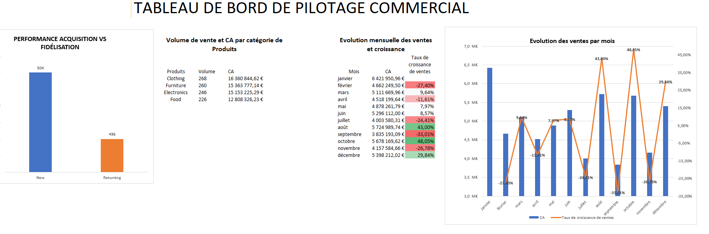
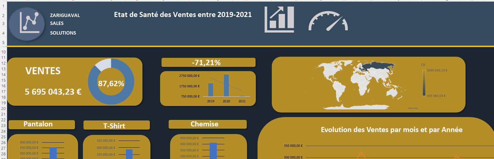

Portfolio Data Analyst
Moïse OBILIKI
Data Analyst Junior/ Business Analyst
Si je vous dis 430 000, à quoi pensez-vous ?
Un simple chiffre ? Peut-être.
Pourtant, derrière ce nombre se cachent 430 000 nouveaux cas de cancer détectés en France en 2023.
Voilà ce que j’aime faire : donner du sens aux chiffres et révéler l’histoire qu’ils racontent. Je suis Moïse OBILIKI, Data Analyst Junior
J’extrais, structure et analyse les données pour transformer l’information en décisions concrètes et utiles. Si vous souhaitez donner du sens à vos données, vous êtes au bon endroit.
Data
Business insights
À propos
Une approche analytique, claire et orientée décision.
À l’intersection entre la data et le business, j’aime convertir les données en leviers de décision. J’analyse les besoins métier, structure l’information, conçois des indicateurs pertinents et produis des tableaux de bord utiles au pilotage de la performance.
À la recherche d’un profil curieux, analytique et orienté résultats pour une alternance, un stage ou un premier poste junior ? Je serais heureux de contribuer à vos projets.
Compétences
Les outils pour passer de la donnée au pilotage.
Python
Nettoyage, analyse et automatisation de traitements data.
Excel
Tableaux croisés, formules, reporting et dashboards.
SQL
Requêtes, extraction, jointures et insights métier.
Power BI
KPI, modèles de données et visualisation décisionnelle.
Tableau
Exploration visuelle et lecture rapide des tendances.
R
Analyse statistique, exploration et visualisation.
Projets Data
Des cas concrets centrés sur la performance business.
6 projets affichés
Power BI
Dashboard ventes avec Power BI
KPI, chiffre d'affaires, performance commerciale et lecture des tendances par segment.
Power BI
DAX
KPI
En cours

Excel
Analyse de ventes avec Excel
Analyse du chiffre d'affaires, suivi des produits par volume de ventes, tableaux croisés dynamiques et recommandations commerciales.
Excel
TCD
Graphiques

Excel
Analyse performance commerciale
Nettoyage, contrôle qualité, analyse des ventes et dashboard de suivi de la performance commerciale.
Excel
Power Query
Dashboard
Python
Analyse clients avec Python
Segmentation client, nettoyage de données, visualisation et recommandations marketing.
Python
Pandas
Matplotlib
En cours
Excel
Reporting RH avec Excel
Suivi du turnover, des absences et de la performance avec un reporting clair et exploitable.
Excel
TCD
Reporting
En cours
SQL
Analyse SQL base e-commerce
Requêtes métier, extraction d'insights, analyse du panier et identification des leviers de croissance.
SQL
E-commerce
Insights
En cours
Parcours
Une progression orientée data, métier et impact.
Licence Data & Business
Fondations solides en analyse, statistiques, outils data et compréhension des enjeux business.
Experiences academiques
Études de cas, tableaux de bord, travaux d'analyse et présentation de résultats décisionnels.
Projets personnels
Nettoyage, exploration et visualisation de jeux de données pour renforcer la pratique terrain.
Opportunite Data Analyst
Disponible pour une alternance, un stage ou un premier rôle junior en data analysis.
Contact
Parlons data, reporting et décisions business.
Je suis ouvert aux opportunités en Data Analyst Junior, Business Analyst Junior, stage ou alternance, avec un intérêt particulier pour le reporting et l’analyse de la performance commerciale. Envoyez-moi un message pour échanger sur vos besoins.